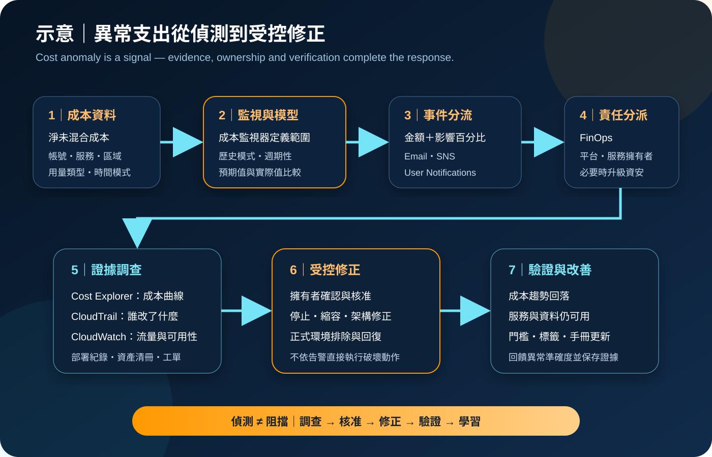

AWS Cost Anomaly Detection：異常支出偵測與事件回應
AWS Cost Anomaly Detection 使用機器學習分析 AWS 淨未混合成本的歷史模式，辨識不尋常的支出變化，並透過電子郵件、Amazon SNS 或 AWS User Notifications 將事件交給責任人。它能縮短發現與調查時間，但不是即時計費斷路器，也不會自動證明事件屬於浪費、誤用或資安事故。
作者：Dr. William｜查閱與發布：2026-11-14
服務定位
AWS Cost Anomaly Detection 是 AWS Billing and Cost Management 中的異常支出偵測能力。它建立預期成本模式，再比較實際支出是否出現異常；偵測結果包含預期支出、實際支出、成本影響、影響百分比、嚴重度與可能根因。
Cost Anomaly Detection 回答「支出是否偏離正常模式」；AWS Budgets 回答「是否跨越已知預算門檻」；Cost Explorer 用於切分、比較與視覺化成本。異常不一定超過預算，超過預算也不一定異常，因此三者不能互相取代。
核心概念與服務邊界
偵測構件
- 成本監視器：定義要分析的服務、連結帳號、成本分攤標籤或成本類別。
- AWS 受管監視器：可自動納入新增帳號、標籤值或成本類別值。
- 客戶管理監視器：選擇特定維度值，適合範圍明確的責任邊界。
- 異常模型：考慮歷史模式、週期性與自然成長，持續評估未來支出。
- 根因維度：依服務、帳號、區域與用量類型排序可能的主要成本來源。
通知與回應構件
- 告警訂閱：把一個或多個監視器連到通知頻率、門檻與收件人。
- 門檻：可用絕對金額、影響百分比，並以 AND／OR 組合。
- 頻率：個別事件需使用 SNS；每日或每週摘要可使用電子郵件。
- 調查：在異常詳細資料與 Cost Explorer 檢查時間、影響及根因。
- 回饋：可標記事件是否準確，協助改善偵測品質。
AWS 受管監視器於查閱日可在單一維度追蹤最多 5,000 個值；超過時依總支出選取前 5,000 個。連結帳號、成本分攤標籤與成本類別監視器只能由管理帳號建立。AWS Marketplace 的多數第三方產品不在支援範圍內，應另以 Budgets 監控；實際支援例外以最新官方文件為準。
適合與不適合的使用情境
適合
- 辨識某項服務、帳號、區域或用量類型突然增加的支出。
- 發現逐步偏離歷史模式、但尚未跨越月度預算的成本變化。
- 依產品、團隊、環境或成本中心分派 FinOps 調查責任。
- 將高影響事件透過 SNS、EventBridge 或 User Notifications 接入值班與工單流程。
- 在 Organizations 中監看新增成員帳號或成本分類的支出模式。
- 以根因維度縮小 Cost Explorer、CloudTrail 與 CloudWatch 的調查範圍。
不適合或不能單獨完成
- 要求秒級阻止資源建立、停用帳號或保證帳單不超支。
- 缺少歷史資料的新服務、新帳號或短期一次性工作負載。
- 只看異常分數就自動刪除資源，且沒有擁有者確認與回復程序。
- 偵測資料外洩、權限提升或惡意 API 行為時，取代 GuardDuty、CloudTrail 或 Security Hub。
- 在標籤、成本類別與帳號責任不清時，精確判定業務根因。
- 對 Marketplace 支出、稅費、折扣分配或發票問題只依賴異常模型。
示意故事案例：測試環境的資料傳輸支出突增
以下為示意案例，不代表特定企業或正式部署。 一家軟體公司以 Organizations 管理正式、測試與共用服務帳號。FinOps 團隊為連結帳號建立 AWS 受管監視器，並設定兩層告警：成本影響超過日常處理門檻時寄送每日摘要；同時符合較高絕對金額與影響百分比時，透過加密的 SNS 主題建立高優先工單。
某日，測試帳號的資料傳輸費用偏離歷史模式。告警顯示主要根因集中於特定帳號、區域與用量類型。值班人員先在 Cost Explorer 確認成本曲線，再檢查 CloudTrail 變更事件、CloudWatch 流量指標、部署紀錄與資源擁有者。調查發現壓力測試把大量資料送往不同區域，且測試結束後排程仍持續執行。
團隊沒有直接依成本告警刪除資源，而是由服務擁有者停止測試工作、保存證據並驗證正式流量不受影響；之後加入跨區傳輸架構審查、測試到期標籤、Budget 門檻與自動工單。若同類事件涉及未知 IAM 主體或未核准 API，流程會升級為資安事件。

建置與運作流程
- 盤點 Organizations、管理帳號、連結帳號、成本類別、標籤與服務擁有者。
- 啟用 Cost Explorer，確認管理帳號與成員帳號的帳務存取模式。
- 以 IAM Identity Center 或聯合身分提供管理權限，要求 MFA 與短期憑證。
- 分離監視器管理、訂閱管理、異常檢視與事件處理權限。
- 選擇服務、連結帳號、成本分攤標籤或成本類別作為監視維度。
- 依組織變動頻率選擇 AWS 受管或客戶管理監視器。
- 為監視器與訂閱設定擁有者、環境、資料分類及到期覆核標籤。
- 依成本規模設定絕對金額與影響百分比，必要時以 AND 降低雜訊。
- 將一般事件送入每日摘要；高影響事件使用 SNS 或 User Notifications 即時分流。
- 限制 SNS 主題政策、訂閱端點與 KMS 金鑰權限，驗證通知可達性。
- 建立調查手冊：確認成本影響、根因維度、資源、變更者、業務目的與持續時間。
- 以 Cost Explorer、CloudTrail、CloudWatch、部署紀錄與資產清冊交叉驗證。
- 由資源擁有者核准停止、縮容、刪除、配額限制或架構修正。
- 修正後驗證服務可用性、成本趨勢、資料完整性與安全監控狀態。
- 在工單保存事件、證據、決策、變更、回復與覆核結果。
- 定期檢查漏報、誤報、監視涵蓋率、過期收件人及未使用權限。
成本、可用性與維運考量
依 2026-11-14 查閱的 AWS 官方資訊，Cost Anomaly Detection 可在沒有額外服務費的情況下使用；Amazon SNS、AWS User Notifications 的相依能力、EventBridge、CloudWatch Logs、CloudTrail 儲存、工單整合及其他調查服務仍可能依各自定價產生費用。2026 年新增的 Amazon Q 成本調查本身於查閱日標示無額外費用，但跨帳號調查若查詢 CloudWatch Logs Insights，可能產生標準資料掃描費。
偵測不是即時的。AWS 文件說明，Cost Anomaly Detection 在帳務資料處理後約每日執行三次，Cost Explorer 資料可能延遲最多 24 小時。新監視器可能需要 24 小時才開始偵測，新服務通常需要 10 天歷史用量。高風險工作負載仍需使用服務配額、SCP、IAM、網路控制與自動到期機制防止資源失控。
告警本身不會降低工作負載可用性，但後續自動化可能造成中斷。任何停止、縮容、刪除、限制或金鑰停用都應有擁有者、核准條件、正式環境排除、備份、回復步驟及 CloudWatch 驗證；無法確認根因時，不應以成本告警直接觸發破壞性動作。
AWS Cost Anomaly Detection 特有資安風險與控制
- 帳務資料過度暴露：以 IAM 最小權限限制成本監視器、訂閱、異常明細與 Billing 頁面；管理者使用 MFA、短期憑證與受管裝置。
- 監視器或訂閱被竄改：分離建立、更新、刪除與檢視權限，並使用資源 ARN 與 ABAC 標籤縮小管理範圍。
- 根因資訊洩漏組織結構：帳號名稱、區域、服務與用量類型只提供給必要的 FinOps、平台與資安角色。
- SNS 主題政策過寬：限制發布來源、訂閱者與跨帳號主體；使用 KMS 加密並測試服務主體與金鑰政策。
- 電子郵件轉寄失控：重要事件改由受管群組、工單或受控 ChatOps 接收，定期移除離職與轉調人員。
- Webhook 或整合機密外洩：credential、Access Key、Secret Key、Token、密碼與 cookie 不得寫入通知、標籤、工單或程式碼；機密存於 Secrets Manager／Parameter Store。
- 未經驗證的自動處置：先查明資源擁有者與業務目的；破壞性動作要求人工核准、範圍限制與可回復設計。
- 成本攻擊被誤判為一般超支：若出現未知主體、未核准區域、異常 API 或大量公開流量，立即串聯 CloudTrail、GuardDuty、Security Hub 與事件回應。
- 監視盲區：確認 Marketplace 例外、超過維度上限的值、新服務歷史資料不足及標籤未啟用等限制。
- 帳號與標籤語意錯誤：為成本類別及分攤標籤建立資料擁有者、變更核准與品質檢查。
- 公開網路管理風險：管理作業從企業受管端點與網路執行；自動化工作負載置於受控帳號與網路邊界。
- 稽核證據不足：啟用組織層級 CloudTrail，集中保存 Cost Explorer API、監視器、訂閱、SNS、IAM 與調查變更。
- 告警管道單點失效：高影響事件設定替代收件人與不同管道，定期測試 SNS、電子郵件、工單與值班流程。
- 證據與設定遺失：事件紀錄、設定匯出與調查結果存於私有、KMS 加密、版本化儲存體，並測試備份與跨區復原。
共同責任邊界
AWS 負責 Cost Anomaly Detection 受管服務、模型執行、支援的監視維度、異常資料處理、通知整合與 AWS 雲端底層基礎設施安全。AWS 提供預期支出、實際支出、成本影響、嚴重度與可能根因等資訊，但不替客戶判定每項支出的業務正當性。
客戶負責啟用 Cost Explorer、選擇監視範圍與門檻、維護帳號與標籤語意、設定 IAM 最小權限、MFA／短期憑證、SNS、KMS、Secrets Manager／Parameter Store、CloudTrail／CloudWatch、網路與公開存取控制；確認事件根因、核准修正、保護帳務資料、測試告警與回復，並建立備份、跨區復原及最終成本責任。
上線與維運可執行檢查清單
- □ Cost Explorer 已啟用，帳務資料與 Organizations 結構已確認。
- □ 每個監視器都有服務範圍、擁有者、責任團隊與覆核日期。
- □ AWS 受管與客戶管理監視器的選擇符合組織變動與分流需求。
- □ 正式、測試、沙盒、共用服務與安全帳號已能清楚區分。
- □ 成本分攤標籤與成本類別已啟用並通過資料品質檢查。
- □ 人員使用聯合身分、MFA 與短期憑證，root 不用於日常操作。
- □ 監視器、訂閱、異常檢視與 Billing 存取已依最小權限分離。
- □ 資源 ARN、ABAC 與標籤條件已用於限制可管理範圍。
- □ 絕對金額與影響百分比已依不同環境設定並定期校正。
- □ 高影響事件使用即時管道，一般事件使用摘要降低告警疲勞。
- □ SNS 主題政策、訂閱端點、跨帳號權限與 KMS 設定已測試。
- □ 通知、工單與標籤不含 credential、Access Key、Secret Key、Token、密碼或 cookie。
- □ 整合機密存於 Secrets Manager／Parameter Store，且有輪替與存取稽核。
- □ CloudTrail 已集中記錄 Cost Explorer、IAM、SNS 與相關管理事件。
- □ CloudWatch 可驗證異常期間的流量、容量、錯誤率與修正結果。
- □ 調查手冊包含 Cost Explorer、根因維度、部署紀錄、擁有者與升級條件。
- □ 成本異常與疑似資安事件的分流及升級條件已明確定義。
- □ 自動修正只作用於核准範圍，且有停止條件、正式環境排除與回復程序。
- □ Marketplace、維度上限、新服務歷史不足等監視盲區已有替代控制。
- □ 告警替代管道、設定備份、證據保存與跨帳號／跨區復原已測試。
- □ 每月覆核誤報、漏報、涵蓋率、過期收件人與未使用權限。
AWS 官方一手來源
- AWS Cost Anomaly Detection 產品頁（查閱：2026-11-14）
- AWS Cost Anomaly Detection FAQs（查閱：2026-11-14）
- Detecting unusual spend with AWS Cost Anomaly Detection（查閱：2026-11-14）
- Setting up your anomaly detection（查閱：2026-11-14）
- Getting started with AWS Cost Anomaly Detection（查閱：2026-11-14）
- Controlling access for Cost Anomaly Detection（查閱：2026-11-14）
- Creating an Amazon SNS topic for anomaly notifications（查閱：2026-11-14）
- Using EventBridge with Cost Anomaly Detection（查閱：2026-11-14）
- Investigating anomaly root causes with Amazon Q Developer（查閱：2026-11-14）
- How AWS Cost Management works with IAM（查閱：2026-11-14）
- Logging Billing and Cost Management API calls with AWS CloudTrail（查閱：2026-11-14）
- AWS Shared Responsibility Model（查閱：2026-11-14）
- AWS AI-powered cost investigations announcement（查閱：2026-11-14）
內容說明
本文依查閱日可用的 AWS 官方文件整理，作為基礎學習與架構討論材料；實際作業仍須依最新監視器類型、維度上限、資料延遲、歷史資料需求、定價、區域支援、Organizations 結構、IAM、SNS、KMS、CloudTrail／CloudWatch 及組織事件管理程序調整。